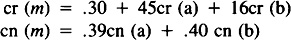
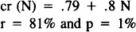
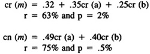

by Abraham Kandel
CRC Press, CRC Press LLC
ISBN: 084934297x Pub Date: 11/01/91
|
|
Fuzzy Expert Systems
by Abraham Kandel CRC Press, CRC Press LLC ISBN: 084934297x Pub Date: 11/01/91 |
| Previous | Table of Contents | Next |
If the brain activity is to be studied, then the EEG is sampled by a microcomputer together with a filtered version of the sound. This permits the localization of the epochs of the EEG associated with each phrase listening. Amplitude averaging of phrase epochs and epoch averaging in the case of repeated words are calculated for each scalp site of EEG recording. Coefficients between left/right or anterior/posterior recording sites are calculated, and statistically correlated with the probability of occurrence of the phrases in the recalled text, with the confidence or correlation assigned to each phrase, etc. By this method, cerebral activity is correlated with the decoded information of a given population.18
The experimental data obtained thus far have shown that texts are fuzzy decoded in all the studied populations, the fuzziness depending not only on the structure of the text itself but also on the degree of knowledge shared by the receiver about the theme of the text.16–18,50
The calculated mean trees exhibited a common pattern in all the experiments. The probability of occurrence of their terminal nodes decreased from left to right. Also, the connectivity of the right nodes was fuzzier than that of the left ones. The correlation assigned to the nodes decreases in some experiments from left to right and from the root to the terminals,17 whereas confidence did not show any defined pattern in any of the experimental groups.
The recalled phrases had a crisp distribution over the left nodes. There was no difficulty in selecting the most frequent phrase at each one of these nodes, which also enjoyed a crisp connectivity. The distribution of the phrases over the “mean” decoding graph paralleled the node connectivity once it became fuzzier for the right nodes, too.50
The general picture is that of a decoding graph being much more structured at its left than at its right part. This was reflected in the fact that it was easy to separate -cut subgraphs for probability thresholds as high as 60% to represent the germs of the text decoding in the chosen population. The germs were always a subgraph occupying the left portion of the decoding tree.
Training on the theme of the text50 seems to be accompanied by a reduction of the fuzziness of the decoding. The decoding of untrained people was described by a family of fuzzy graphs, since it was impossible to decide for only one graph based on node probability, connectivity, and distribution of phrases. In contrast, the decoding graph of trained people could be represented by a -cut subgraph with a 70% threshold, exhibiting a crisp node connectivity and phrase distribution.
All studied logic operations were of the type
a m b
with m standing for one of the connectives: and, or, and if.
Confidence and correlation were averaged for a, b, and each m. Also, multiple linear correlations were tested between correlation and confidence assigned to m and those values associated to a and b.
The results confirmed the use of the classical max rule in the case of the connective or, since confidence and correlation averaged for m was equal to the maximum averaged for a and b.
The same was not true for the connective and. In this case, confidence (cn) and correlation (cr) averaged for m were intermediate values for those averaged for a and b. As a matter of fact, the calculated value for m was a liner function of the values obtained for a and b:

the correlation coefficients (r) being around 70% and the probability of the results being obtained by chance ranging from .5 to 2%.
Surprising is the fact that the linear coefficient calculated for correlation is different from zero. This implies a correlation is different from zero for m even if it is zero for both a and b. However, correlation was also linearly correlated to the node position in the tree. This could mean that correlation depended not only on the values a and b, but also on the structure of the text itself. The correlation cr (N) of the nodes of level N was calculated as:

This kind of dependence was not observed in the case of confidence.
It may be assumed that people tend to use powered means to assess the true values in the case of the connective and instead of the classical min rule.22,30,53,55
Correlation averaged for the operator if was greater than the maximum value calculated for a and b. Confidence, in turn, was equal to the calculated maximum for a and b. Despite this, both correlation and confidence for m was linearly related to the values assigned to a and b:

Once more the linear coefficient was different from zero only in the case of correlation, and data did not support the classical propositions.31
The brain activity recorded in the EEG while the subject was listening to the text was linearly correlated to the probability of the phrases in the recalled text, as well as with the confidence and correlation assigned later to these phrases.18
The brain activity was studied for each phrase of the text through the analysis of the mean amplitude of the EEG calculated for the epoch corresponding to the listening of the phrase and for each one of the six scalp recording sites: left and right frontal, parietal, and central areas. Coefficients of dominance were calculated by dividing the area averaged for the left and right sites (Cf, Cp, and Cv) or for each cerebral hemisphere, by dividing frontal and parietal areas (Cfp), frontal and central areas (Cfc), and central and parietal areas (Ccp).
The probability of phrases p (F) on the recalled texts was a linear function of the coefficient of dominance at the frontal, central, and parietal areas:
p(F) = 345 – 2Cf + .36Cc – .9Cp
The correlation coefficient (r) was .73 and the probability (p) that the calculated relation was explained by chance was of 3.3%.
| Previous | Table of Contents | Next |